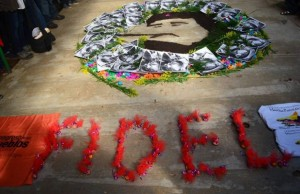

Resumen Latinoamericano/ 1 Dezember 2016, aus Kolumbien.

Con otro emotivo homenaje a Fidel, representado por una “mística” al estilo de los Sin Tierra brasileños, comenzó el primer día de charlas, talleres y discusión de resoluciones a escala continental de la Asamblea de los Movimientos hacia el ALBA que está deliberando en una finca de la Organización Nacional de Indígenas de Colombia, en la localidad de Silvania, a una hora de Bogotá. Mientras un trovador brasileño entonaba una bellísima canción dedicada al Comandante en Jefe de todos y todas las revolucionarias del mundo, varios militantes dibujaban con tierra de colores el rostro del Che y lo rodeaban de fotos de Fidel, sobre las que cada uno de los delegados y delegadas acercaban flores y hojas. Cada uno de ellos formulaba a través de la consigna “Gracias Fidel”, una serie de frases que historiaban la lucha y la coherencia del líder cubano y la escribían sobre un mural con su rostroCerca de 300 delegados de la mayoría de los países de América Latina y el Caribe, más algunos integrantes de organizaciones sociales de Canadá, USA, Palästina, Euskal Herria, China y representantes de organizaciones sindicales a escala mundial se hicieron presentes en el Encuentro.
Luego se abrió la jornada de oratorias con una muy interesante alocución de Joao Pedro Stedile, del MST de Brasil donde convocó a priorizar la organización de masas para luchar contra el avance de la derecha regional, criticó el electoralismo y la politiquería, y a la vez interpeló a los delegados presentes para que desde la izquierda se vuelquen propuestas de qué tipo de democracia se quiere, sabiendo que la actual es utilizado por los enemigos de las causas populares.
El debate suscitado por las palabras de Stedile fue sustancioso ya que en el mismo se explicitaron posiciones diferenciadas en cuanto a la defensa más visceral de algunos gobiernos progresistas y otros más críticos con los mismos. Todos, Jedoch, reconocen la necesidad de la unidad en la acción contra el avance neoliberal.
Por la tarde, dos importantes conferencias actuaron como disparadores sobre el trabajo en comisiones que cerró la jornada y donde todos los concurrentes abordaron la discusíón sobre neoliberalismo, neodesarrollismo y socialismo. En la primera exposición la ministra del poder popular de la Mujer, Blanca Erckaut, expuso magistralmente y con pasión la lucha que vienen dando el pueblo y el gobierno bolivariano de Venezuela, haciendo un paneo sobre lo que fueron los últimos meses donde se pudo frenar una de las tantas algaradas de la oposición neo-fascista. Erckaut ponderó el trabajo de las Comunas, la lucha de las mujeres y también la del pueblo todo.
Finalmente, se discutió intensamente sobre la paz en Colombia, con el aporte de Andrés Gil, diirgente agrario de Marcha Patriótica, Olimpo Cárdenas, del Congreso de los Pueblos y el profesor Renán Vega Cantor. Fueron tres informes realistas sobre lo que es el actual momento, con las consiguientes amenazas de muerte y los asesinatos, pero también con las grandes movilizaciones por la paz en las que están empeñados los distintos sectores del pueblo colombiano. Tanto la Marcha como el Congreso ratificaron que seguirán apostando a encontrarse en la lucha contra los enemigos del pueblo, mientras que Vega Cantor consideró que la derrota en el reciente plebiscito ha sido muy grave para Colombia, y que según él las izquierdas no lo han analizado con sentido de realidad. También consideró como que en el segundo acuerdo se han hecho muchas e importantes concesiones al “uribe-santismo”. Esta y otras opiniones urticantes provocaron que Gil y Cárdenas insistieran en todo el esfuerzo que se ha hecho desde los movimientos populares para llegar al actual momento, y que hay que hacer todos los esfuerzos para que la derecha no tuerza el rumbo de lo logrado, y que la única solución para ello es con la movilización popular permanente.
Antes de estas exposiciones se pudo ver y escuchar un video con el saludo de integrantes de la mesa de negociación de paz del ELN.(Por Carlos Aznárez)